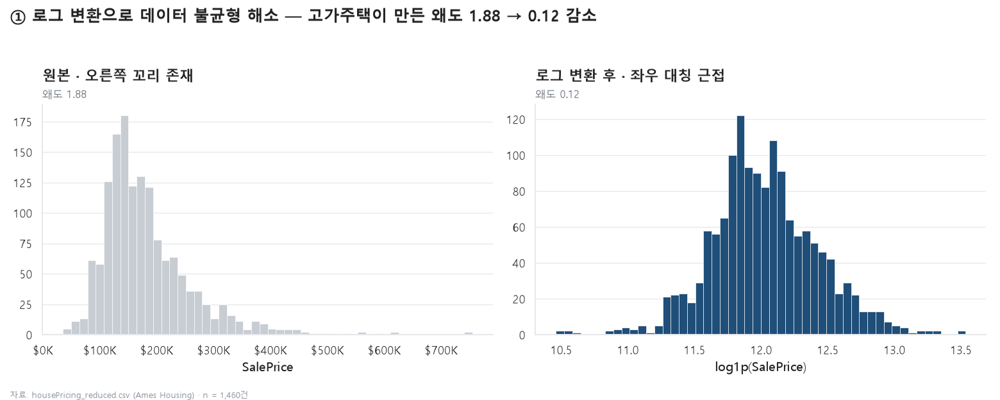
| 단계 | 넘겨주는 산출물 |
|---|---|
| 01 → 02 | 상관 상위 feature · 이상치 후보 2건 |
| 02 → 03·04·06 | 공선성 제거 확정 feature 세트 (공통 입력) |
| 03 → 05 | 최적 모델과 변수 중요도 |
| 04 → 05 | SalePrice 등급(High/Low) 계산 열 |
| 06 → 07 | 대시보드 요약 통계 → LLM system 프롬프트 |
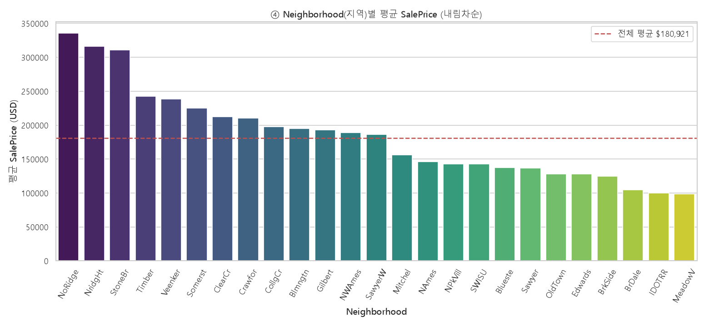
| 공선 쌍 | r | 유지 → 제거 |
|---|---|---|
| GarageCars ↔ GarageArea | 0.882 | GarageCars → GarageArea |
| GrLivArea ↔ TotRmsAbvGrd | 0.825 | GrLivArea → TotRmsAbvGrd |
| TotalBsmtSF ↔ 1stFlrSF | 0.820 | TotalBsmtSF → 1stFlrSF |
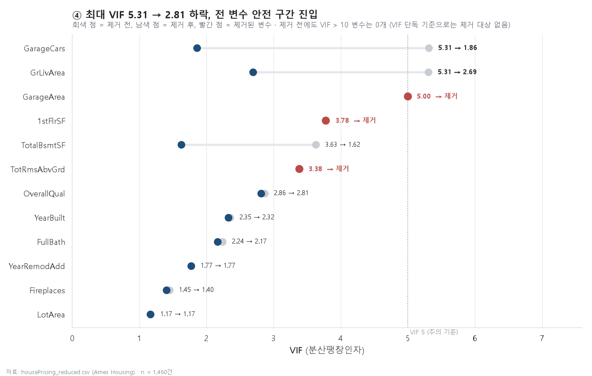
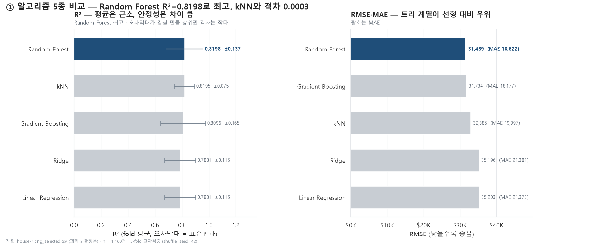
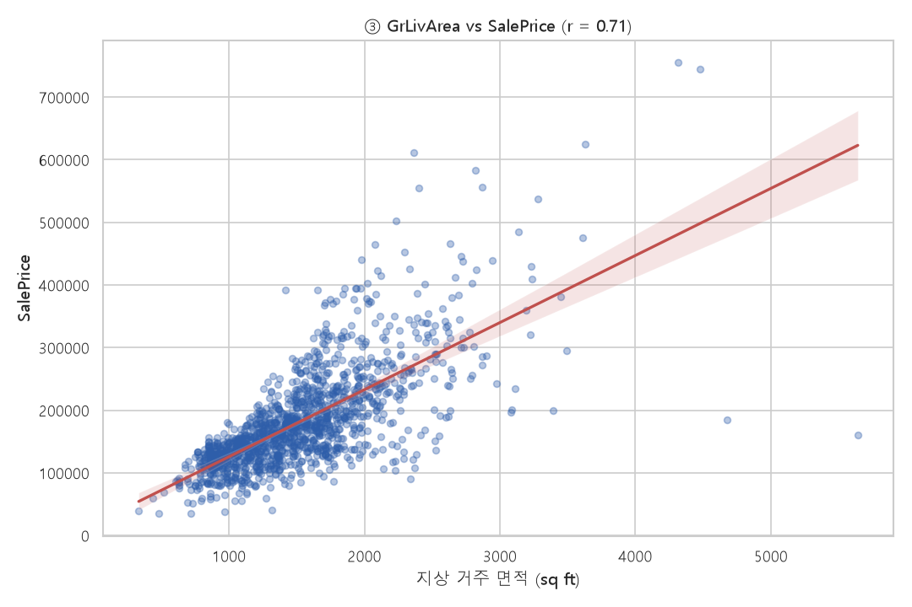
| Id 524 | Id 1299 | |
|---|---|---|
| SaleCondition | Partial | Partial |
| 면적 | 4,676 sqft | 5,642 sqft |
| 판매가 | $184,750 | $160,000 |
| 평당가 | $39.5 | $28.4 |
| 전체 평당가 중앙값 | $120.1 | |
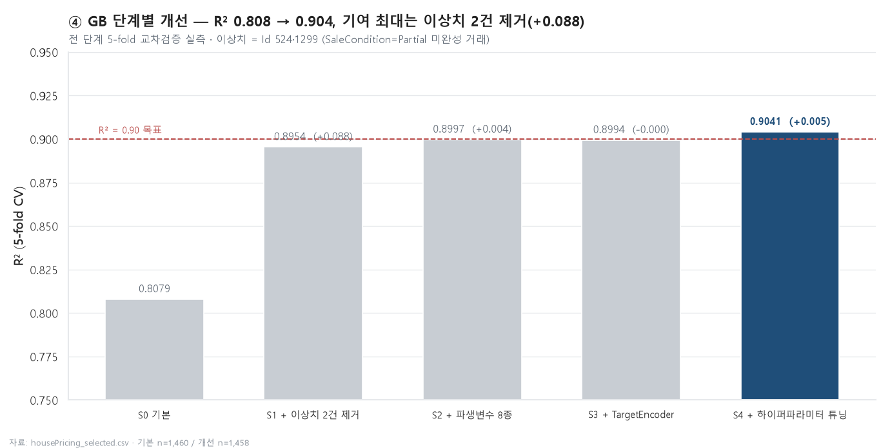
| 단계 | R² | 증가 |
|---|---|---|
| 기본 GB | 0.8079 | — |
| + 이상치 2건 제거 | 0.8954 | +0.088 |
| + 파생변수 8종 | 0.8997 | +0.004 |
| + TargetEncoder | 0.8994 | -0.000 |
| + 하이퍼파라미터 튜닝 | 0.9041 | +0.005 |
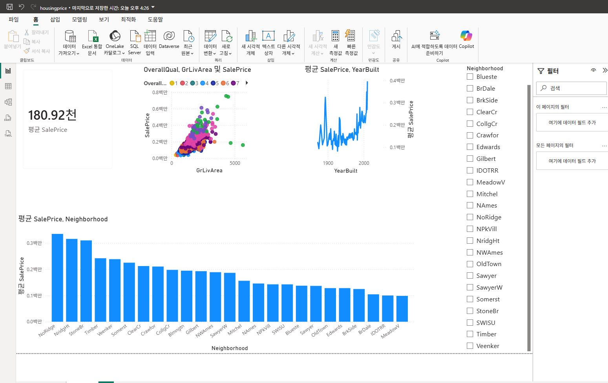
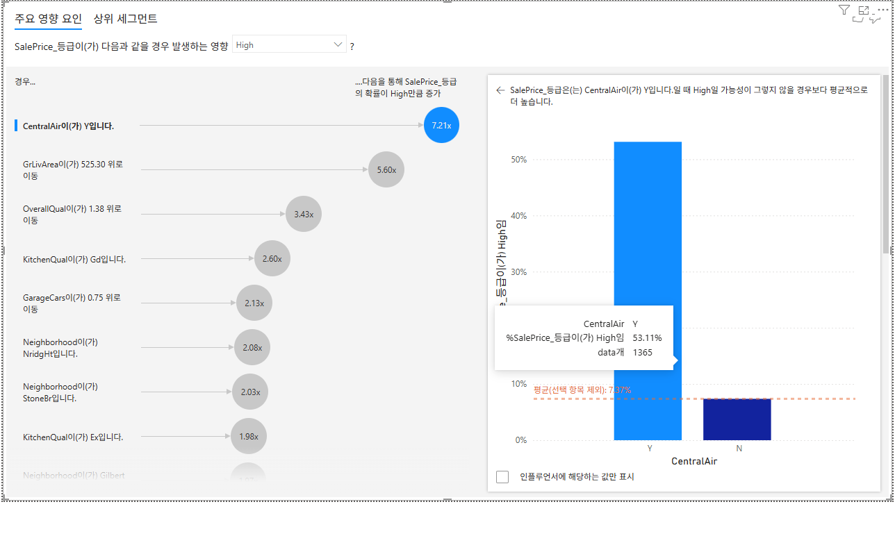
| 냉방 없음 | 냉방 있음 | |
|---|---|---|
| 건수 | 95건 (6.5%) | 1,365건 |
| High 비율 | 7.37% | 53.11% |
| 건축연도 중앙값 | 1925년 | 1976년 |
| 1950년 이전 건축 | 81% | 18% |
| 품질 평균 | 4.67 | 6.20 |
| 면적 중앙값 | 1,134 sqft | 1,473 sqft |
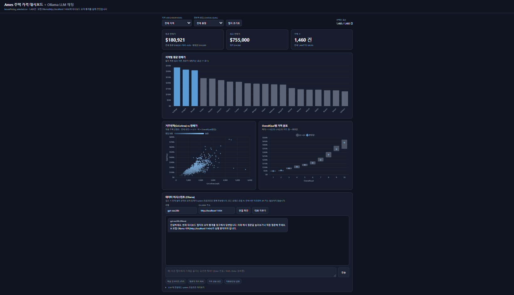
| 확인 항목 | 결과 |
|---|---|
| 최상위 설명 변수 | Python 상관 · Orange 회귀 · Power BI Key Influencers → 모두 OverallQual · GrLivArea 지목 |
| 지역별 평균가 순위 | Python과 Power BI 25개 지역 순서 완전 일치 |
| Orange vs sklearn (트리·선형) | 차이 0.005 ~ 0.015 — 사실상 동일 |
| Orange vs sklearn (kNN) | 0.634 vs 0.820 — 0.186 차 |
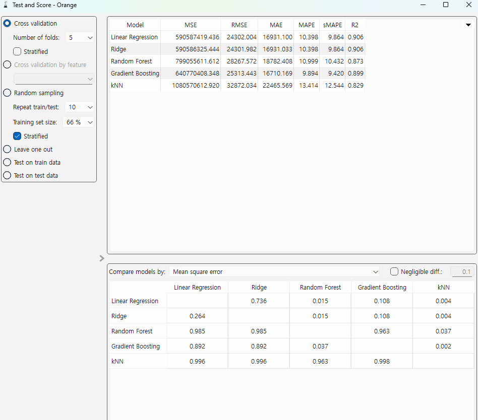
| 색 | 의미 |
|---|---|
| 회색 | 일반 데이터 (맥락) |
| 남색 | 핵심 강조 |
| 빨강 | 이상치 · 주의 (남용 금지) |
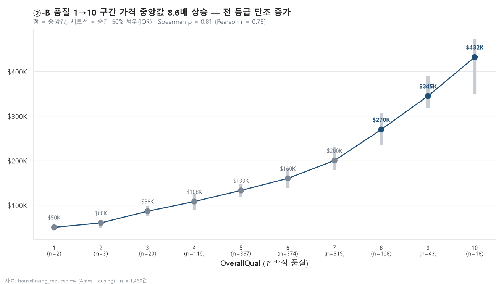